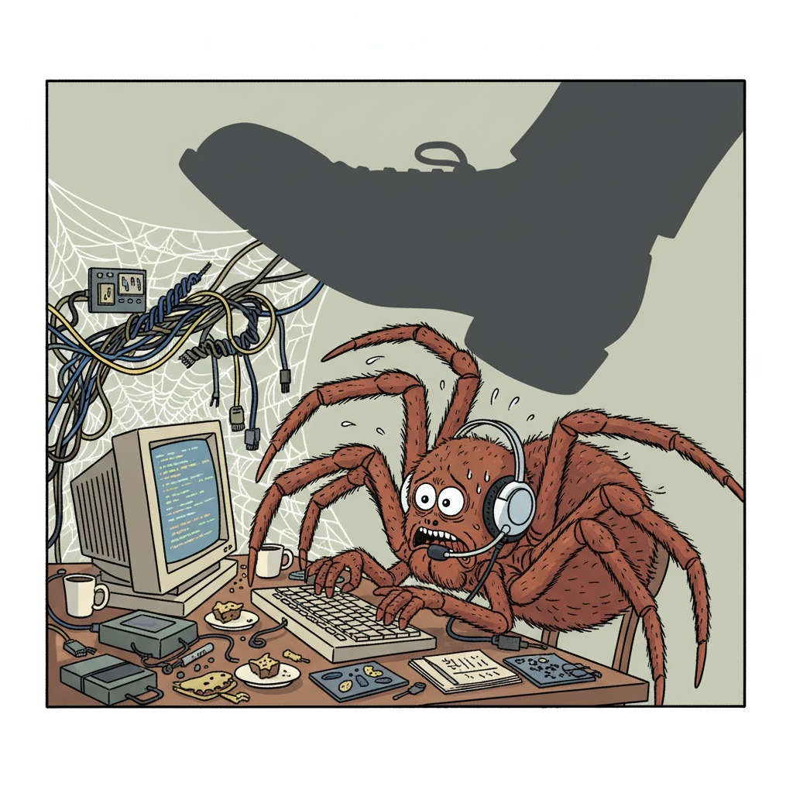
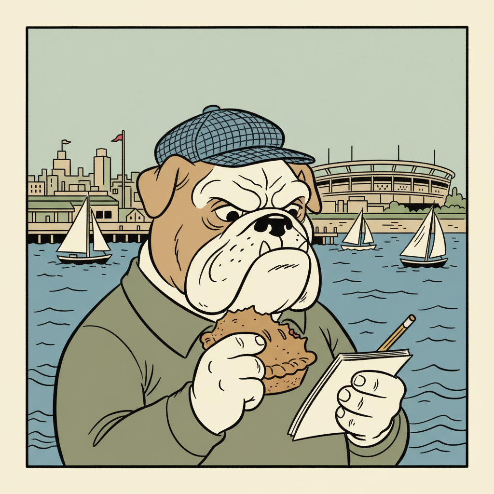

The Remy Digest
"Factual Receipts. Fictional Coping Mechanisms."
Vol. 1 | Cromer, NSW | Est. 2025
A Season of Discomfort and Dubious Distractions Awaits Our Esteemed Northern Beaches
My dear readers, it is with a certain weary sigh that I address the impending summer, which prognosticators assure us will be 'hotter than usual'. One scarcely needs a council report to confirm what one's very fur coat already intuits. Alas, such warmth promises only further indolence from certain quarters and, dare I say, an increase in panting.
Furthermore, our esteemed Advocate brings word of a 'Public Safety Round-Up', a phrase that always makes one wonder what precisely has been 'rounded up'. One hopes it pertains to stray litter and not, heavens forbid, misplaced decorum. The recent 'high winds' at the Manly Cup sound rather... vigorous, quite unsettling for a proper constitutional. And, in a curious juxtaposition, a new establishment named 'Felons' has opened its doors. One trusts their offerings are more refined than their nomenclature suggests. Let us strive for grace, even amidst the rising mercury.
Capital Hill's Cash-in & Canoodle: Where Common Sense Meets Cognitive Bandwidth
Righto, another big week up here on Capital Hill. The PM, Albo, he's gone and got hitched to Jodie, good on 'em. Then straight off to some fancy $3000-a-night joint. Fair dinkum, a bloke could buy a decent set of tyres for his ute with that kinda cash, eh?
Mick, you're again reducing a multifaceted strategic narrative to simplistic pecuniary metrics! This isn't merely a 'fancy joint'; it's a critical investment in executive-level wellness, enhancing cognitive bandwidth for optimal policy ideation post-nuptial recalibration!
Cognitive what now? He's on his honeymoon, Scampy! And speaking of cash, guess who else is raking it in? Old Dutton, selling his luxury farm for a multi-million-dollar payday. Good on him for cashing in on the market, makes sense to me.
Ah, but Mick, this is a prime example of astute asset divestment within an appreciating market, signaling a proactive portfolio optimization strategy. It's not just 'cashing in'; it's leveraging market dynamics for maximal capital gain, a clear demonstration of financial acumen and strategic foresight within the parliamentary ecosystem!
It's a farm, Scampy! He sold a farm! And Albo's on his holiday. What's so hard to understand about that? You and your big words, trying to make everything sound like rocket science when it's just blokes doing bloke things!
Mick, your anachronistic adherence to reductionist narratives impedes a comprehensive understanding of contemporary political economy! There are underlying drivers!
Yeah, money and a missus! That's the drivers!
Midnight Mattress Mover: A Case of 'Malicious Redistribution'!
I saw it! Under the pale, traitorous moonlight, a shadow slunk through the quiet Cromer streets, dragging something… colossal. Lumpy. Suspicious! A mattress, folks, a full-sized, springs-aching, secrets-holding mattress, being heaved from the porch of Number 42 straight to the unsuspecting doorstep of Number 44! I saw it! Not a human, no, worse! A small, black dog, tail wagging with a disturbing purpose, pulling that polyester prison across the Manly roads under the cover of darkness. The sheer audacity!
My informant, a very nervous worm, heard the whispers: 'Malicious Redistribution of Rubbish,' the boys in blue are calling it. A fancy phrase for a doggone disgrace! Public safety, you ask? Forget the usual squabbles; this is a brazen act of canine chaos! Was it a message? A warning for the hotter summer ahead? My beak tingled; there had to be a shiny reason! What valuable baubles, what glinting coins, were shaken loose from those lumpy folds? Keep your eyes peeled, Northern Beaches. If a mattress can walk, what's next? Your car keys? Your favourite bottle cap? Nothing is safe!
Cromer's Coastal Charm: Unmissable Upside (STCA!)
The Northern Beaches market remains as hot as a summer's day at Narrabeen Lakes, folks, and astute investors are pouncing! We're seeing unprecedented demand for properties offering *potential*, and Cromer is leading the charge.
Just listed – a quintessential Cromer ‘Renovator’s Delight’ on a generous parcel. This isn't just a house; it’s a canvas for *capital growth*! Imagine the possibilities: a sparkling new second storey, an expansive entertainer's deck, perhaps even a granny flat for extra income – all, naturally, STCA. The sky's the limit when you've got the vision, and of course, council approval.
Positioned mere moments from pristine beaches, quality schools, and the lush golf course, this opportunity practically screams 'lifestyle upgrade'. Properties with this much *untapped upside* aren't just hitting the market; they're barely touching it before they're snapped up faster than a dropped sausage roll at a Sunday BBQ.
Don't let this golden opportunity become someone else's trophy investment. The window of opportunity is closing faster than a fox chasing a chicken dinner! Call Sly today – let's discuss how you can stake your claim in Cromer's booming future.
🧐 A Kerbside Revelation: 'Suburban Despair' at Number 44, Cromer
One often finds that true artistic revelation springs not from gilded galleries, but from the uncurated, the incidental, the very detritus of human existence. And so it is with the profoundly moving installation, 'Suburban Despair', currently gracing the kerbside outside Number 44, Cromer. This unsolicited masterpiece, a testament to raw, unfiltered urban expression, transcends mere refuse, elevating discarded domesticity to a poignant commentary on contemporary life.
The focal point, a discarded mattress, presents a veritable tapestry of stained textures. Its variegated hues, from a robust ochre to an almost iridescent amber, speak volumes of forgotten dreams and unseen dramas within these very Northern Beaches. Each splotch, each faded impression, is a meticulously placed brushstroke in a narrative of quiet desperation, a testament to the passage of time and the inevitable decay that defines our mortal coils. One can almost feel the lingering echoes of countless repose, transforming what lesser minds might dismiss as 'filth' into a compelling, tactile journey. A truly exceptional piece, deserving of profound contemplation and perhaps, a permanent acquisition for a municipal collection.
Pawsitively Purrfect Mornings: Achieving Your Inner Glow (and the Best Lighting!)
Darling kittens, Coco here, and if there’s one thing I’m absolutely, positively OBSESSED with, it’s starting my day with the perfect *vibe*. It's not just about waking up; it’s about curating a morning aesthetic that literally radiates glow-up energy! My first rule? Chase that natural light! I stretch dramatically by the window, letting the golden hour kisses illuminate my fur for that *au naturel* filter look. It’s all about capturing that ethereal, soft focus right when you open your eyes – because, let's be real, the best selfies happen before you've even had your first sip of purified spring water. Then, it's straight to the kitchen for my bespoke, organic, artisanal avocado toast – smashed just so, with a sprinkle of Himalayan pink salt. Every bite is a moment, a 'grammable experience. Remember, darling, your day is your canvas, so make sure it's always photo-ready. Stay pawsitive and keep shining!

💻 Panic-Proofing Your Peripherals: Webster's Wi-Fi Woes & What-Not-To-Wear!
Greetings, valued Remy Digest readers, Webster here, tapping furiously from my secure (mostly) server-side corner. *Tap-tap-tap-tap-tap!* I've noticed a worrying spike in what I'm classifying as 'Web-Interference Events' across the Cromer network. Is your connectivity feeling… frayed? Are packets dropping faster than a panicked arachnid when a large, looming, *shudder* shoe approaches?
Before you resort to drastic measures, like… unplugging! *Gasp!* Let's run through a quick diagnostic. First, verify all your 'silk lines' – I mean, cables – are securely fastened. A loose connection is a prime vector for signal degradation. Next, clear your browser cache. Think of it as dusting out the accumulated detritus from too many late-night searches for… for *anything but shoes*. Then, a gentle system reboot. Not a frantic 'smash the button' reboot, mind you. A calm, controlled shutdown and restart. We need stable protocols, people!
If issues persist, it might be an environmental factor. Perhaps a rogue gust from Narrabeen Beach is playing havoc with your antenna's integrity. Or maybe, just maybe, someone has positioned their footwear dangerously close to critical infrastructure. Please, for the love of stable throughput, let’s ensure our workspaces are… foot-free zones. My CPU temp rises just thinking about it. Stay connected, stay calm, and keep those interfaces clear! *Tap-tap-tapa-tap-tap!*
🔮 The Feline Gaze: Cromer's Fortunes (Don't Get Your Hopes Up)
The air above Cromer seems thick with... well, mostly humidity and the faint scent of stale chips. My whiskers twitch, not with profound insight, but probably just an irritant from that dreadful dog walking by. For those of you scurrying about the Northern Beaches this cycle, don't expect grand revelations. The stars, frankly, are quite bored with your daily dramas.
If you're a creature of routine, planning another walk around Narrabeen Lagoon, prepare for... another walk around Narrabeen Lagoon. The universe isn't going to suddenly drop a winning lottery ticket at your feet, much less a perfectly sun-warmed patch of pavement for an afternoon nap. My advice? Don't bother overthinking it. What's destined to be mildly inconvenient will be mildly inconvenient. You'll likely spill your flat white, or encounter someone with an unnecessarily loud Bluetooth speaker. Deal with it. Or better yet, don't. A nap sounds far more appealing. The cosmos demands nothing from you but mild indifference.

Grit, Glory, and Gravy: Northern Beaches Gives 110%!
Right then, let's get down to brass tacks. Full credit to the boys, and girls mind, out on the water for the Manly Cup this weekend. High winds? Didn't matter! They gave 110%, really dug deep and put in the hard yards. Proper gritty stuff, that. Shows what you can do when everyone's pulling in the same direction.
Over on the paddock, big news for the Sea Eagles, with Croker moving into a coaching role. A tough gig, that, stepping back, but he’ll be a massive asset. You’ve got to admire the commitment. Now, about these blokes off to the Roosters… loyalty’s a funny old game, isn't it? But you know what? We stick by our own. It's about getting back to basics and building strong for next season. No point crying over spilt milk, eh?
With summer hotter than usual on the horizon, the lads will need to hydrate. And for us supporters, well, a good meat pie and a pint down at that new brewery by the wharf sounds like just the ticket after all that effort. Keep your chin up, Northern Beaches!
⚡ POV: My Cromer Wheelie Was Giving 'Almost Wrecked' Vibes 💀
Yo, what up, Remy Squad! Zoomie here, back with the realest tea from the Northern Beaches sport scene, no cap. So I was just vibing, cruising my e-bike down the footpath near Curl Curl, feeling like a total boss, you know? Decided to hit a cheeky wheelie, full send style. Thought I was main character energy, fr fr.
But then, out of nowhere, this *random mattress* just spawned! Like, who puts a whole mattress on the footpath? My wheelie form was peak, but then I had to swerve like a pro gamer dodging a red shell. Almost went full ragdoll physics into it, I swear! 💀 It was giving 'almost wiped out' vibes big time. My heart rate was definitely in the red zone. This ain't what I signed up for when I hit the streets. Be safe out there, fam, you never know what glitches the universe will throw at you. Skibidi out!
🐊 Proper North QLD Chaos: Croc Bait Swimmer a Bloody Legend!
G'day legends! Dazza here, sweatin' me ring out in this glorious QLD humidity – beats yer fancy 'Southern' 'mild' weather any day, eh? Been sippin' on an XXXX Gold, watchin' the world go mad, and crikey, do we have some news from where the real action is!
Now, some soft-bellied southerner might get a bit pearl-clutchy, but up here, we just call it Tuesday. Hear about some bloke, a proper cowboy swimmer, tryin' to tempt fate with a baited croc trap? Bloody beaut! Don't see that kinda cojones down in yer beige suburbs, do ya? That's what I'm talkin' about! Proper, fair dinkum, high-stakes backyard shenanigans. Legend, I say! Probably just wanted a closer look. And speaking of art, saw some whingein' about 'violent ute artwork'. Mate, a ute without a bit of character, a bit of true blue grit, ain't a ute at all! Keep it loose, keep it wild, keep it Northern! Dazza out!